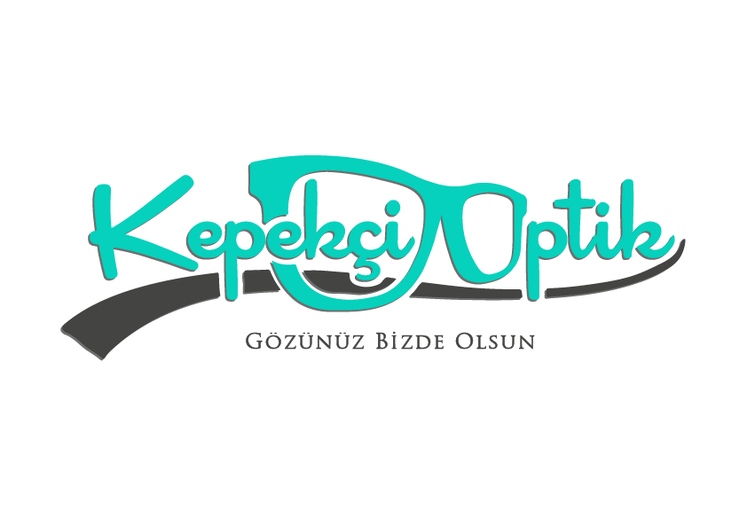
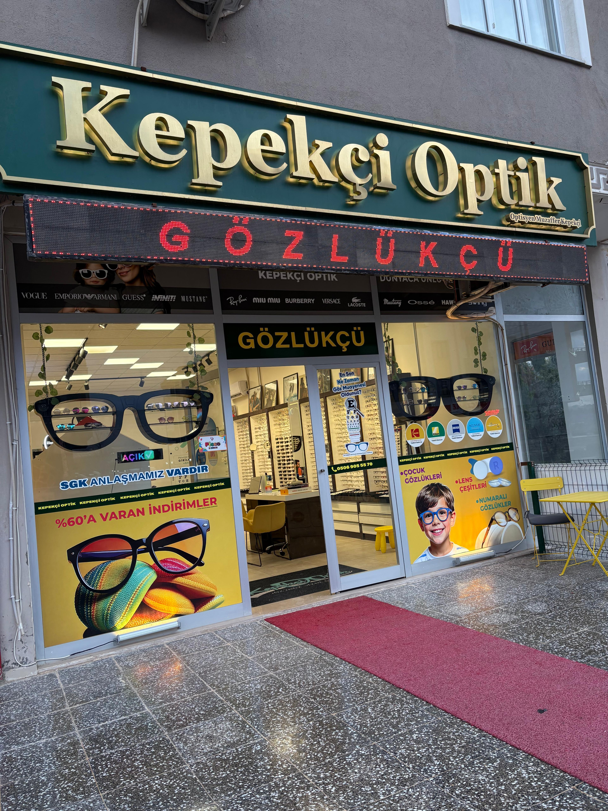

Yakın mesafede bulanıklık, okuma mesafesini uzatma ihtiyacı (presbiyopi).
İki ayrı gözlüğü taşımak ve her an değiştirmek yerine tek çerçevede çözüm.
Ekran, klavye ve toplantıda karşıdaki yüz — gün boyu rahat odaklanma.
Yoldan gözünü ayırmadan GPS'e ve göstergeye bakış — tek hareketle.
